Bảng hàng và hồ sơ đọc từ kho trên máy nên lọc, cuộn, mở hồ sơ không chờ mạng; sửa ghi trên máy trước, rớt mạng vài phút không mất thay đổi
Vì sao làm
Tham chiếu luật 30–31; đứng trên kết luận của bài thử đồng bộ
Đã hứa
- AC-1 — Given hai sàn trên Postgres thật; sàn A có người tạo X với một căn «Chỉ tôi» và một căn «Toàn sàn» đã đặt chủ
- AC-2 — Given kho trên máy đã có bản kéo và lịch sử của một căn đã mở, mạng hỏng (mọi lời gọi ném lỗi), When lọc danh sách
- AC-3 — Given kho có một căn ở phiên bản 3, When sửa giá hợp lệ rồi sửa tiếp chi tiết, Then bản trên máy đổi ngay theo
- AC-4 — Given đang mất mạng, When sửa 20 ô trên năm căn, dựng lại bộ đồng bộ từ kho giữa chừng, rồi có mạng lại, Then máy
- AC-5 — Given máy chủ đã ghi một thao tác nhưng phản hồi không về tới máy, When bộ đồng bộ gửi lại, Then máy chủ không có
- AC-6 — Given X có thao tác chờ trên căn H và trên căn K, Y sửa H trước, When X có mạng, Then thao tác của X trên H không
- AC-7 — Given Y đặt «Đã cọc» cho căn H trong lúc X mất mạng và có thao tác sửa giá chờ trên H, When X có mạng, Then sửa giá
- AC-8 — Given các trạng thái của kho và hàng đợi, When suy chỉ báo, Then chữ đúng bảng: chưa có bản kéo → «Đang tải lần
- AC-9 — Given mất mạng và trình duyệt không phát sự kiện «có mạng», When qua chu kỳ thử 15 giây (có thao tác chờ) hay
- AC-10 — Given người dùng còn n thay đổi chờ gửi, When bấm đăng xuất, Then hiện hỏi nói đúng n; «Ở lại» giữ nguyên kho;
Thiết kế
docs/superpowers/specs/2026-10-31-nhanh-tuc-thi-design.md
Quyết định
- 2026-10-31 · Máy · approach · S1 — Đã tra tri thức: Bảng hàng và hồ sơ đọc từ kho trên máy nên lọc, cuộn, mở hồ sơ không chờ mạng; sửa ghi trên máy trước, rớt mạng vài phút không mất thay đổiKho đã khai tri_thuc — bước thiết kế tra trang trước khi chọn.
- 2026-10-31 · Máy · descope · S1 — KHÔNG dựng màn Bảng hàng và Hồ sơ căn ở hàng này — dựng bộ đồng bộ và hook mà các màn ấy dùng, cùng trang thử ẩnLộ trình đặt Bảng hàng ở hàng 14 và 32, Hồ sơ căn ở hàng 33; hàng 13 là nền.
- 2026-10-31 · Máy · approach · S1 — Hỏi-1: bộ đồng bộ không chở thông tin chủ nhà xuống máy ở hàng này; số chủ trên máy để hàng sauGiám sát nhắc «không mang nguồn (hàng 11)»; bất biến 2; nhưng phần ngoài phạm vi của hàng 11 ghi «Số chủ trên máy, xoá khi đăng xuất — hàng 13».
- 2026-10-31 · Máy · approach · S1 — Hỏi-2: kéo định kỳ 30 giây, khi quay lại trang và sau mỗi lần gửi; kênh thời gian thực Supabase để hàng sauADR-0006 khuyên kênh thời gian thực chỉ để báo «có thay đổi, kéo về»; ngưỡng của ô không đòi nó.
- 2026-10-31 · Máy · approach · S1 — Hỏi-3: trang thử /proto/nhanh-tuc-thi có ở bản thật, không có lối vào trong điều hướng, chỉ vai có Bảng hàng, gỡ khi Bảng hàng thật raADR-0006 việc 4 đòi đo lại vế mất mạng trên tên miền thật ở hàng này; bảng thật chưa có.
- 2026-10-31 · Máy · approach · S1 — Gửi lại không trùng bằng đối chiếu lịch sử căn ở máy, không thêm khoá chống trùng hay con trỏ kéo ở máy chủVùng của hàng là apps/web/src/lib/sync; khoá chống trùng cần migration và đổi API ngoài vùng, số migration theo dãy đã cấp hết ở đợt.
- 2026-10-31 · Máy · approach · S1 — Kéo trọn danh sách hàng mỗi lầnGET /api/v1/listings chưa có con trỏ hay tham số since; thêm là đổi API ngoài vùng.
- 2026-10-31 · Máy · approach · S1 — Tách bước gấp stepListing khỏi foldListing trong lõi, cùng hành vi, để web gấp sự kiện tạm bằng đúng luật lõiBản trên máy phải đổi ngay theo luật gấp của lõi; chép luật sang web là hai chỗ lệch nhau.
- 2026-10-31 · Máy · approach · S1 — Đụng nhau hay bị từ chối thì căn thành «cần xem» với hai lối do người chọn, căn khác vẫn gửiTham chiếu luật 31 và 10; bài học Ngoài-1 của bài thử đồng bộ: một thao tác lỗi chặn mọi thao tác sau mà không báo.
- 2026-10-31 · Máy · descope · S1 — KHÔNG làm ngoại tuyến thật khi mở app lúc không mạng (service worker) ở hàng nàyTham chiếu §11 để ngoại tuyến thật ngoài bản đầu; ngưỡng của ô chỉ đòi rớt mạng vài phút trong app đã mở.
- 2026-10-31 · Máy · descope · S1 — bỏ design-pass — chỉ thêm một chỉ báo chữ trên thanh trên và hai hộp thoại bằng thành phần đã cài; trang thử chỉ để chấm và đoKhông có màn mới cần duyệt hình; ảnh chụp E4b, E8b trình ở Cổng Bằng chứng.
- 2026-10-31 · Máy · approach · S1 — Bài kiểm web chạy bằng node:test như các gói khác qua hai lệnh mới executors.test.web và executors.test.web_db; kho IndexedDB đo bằng trình duyệt thậtapps/web chưa có lệnh kiểm nào; kho không có fake-indexeddb và thêm gói là đổi package-lock.
- 2026-10-31 · Máy · descope · S1 — Hỏi-4: bỏ design-pass — người nhìn chỉ báo, bảng Cần xem và hộp hỏi đăng xuất qua ảnh chụp ở Cổng Bằng chứngPhản biện context sạch: thiết kế có bốn màn mới nên lối giữ design-pass không chết; cách duyệt giao diện là lựa chọn của người.
- 2026-10-31 · Người (Manh Phan) · seal · gate1 — người gõ: «/acceptance-gate:approve nhanh-tuc-thi duyệt» — nhận khuyến nghị Hỏi-1..4
- 2026-10-31 · Người (Manh Phan) · seal · gate1.5 — người gõ ở phiên thợ: «Duyệt kế hoạch»
- 2026-10-31 · Máy · fix · S3 — Bước dựng thao tác bị từ chối của E8b đổi từ «Đang bán khi thiếu giá» sang «người khác Rút căn, tôi đặt Đã bán khi đang mất mạng»Thao tác thiếu giá bị lõi chặn ngay trên máy (AC-3) nên không bao giờ tới máy chủ; chỉ lời từ chối của máy chủ mới vào Cần xem (AC-6), như ca «máy chủ từ chối» của E6.
- 2026-10-31 · Máy · fix · S4-r1 — Sửa bốn lỗi trong hợp đồng của lượt 1 và nguyên nhân chỉ báo treo: nhịp thử khởi động lại được (bản dev chạy hiệu ứng hai lần nên lần dọn đầu tắt hẳn nhịp), đăng xuất khép bộ đồng bộ và chờ lượt đang bay trước khi xoá kho, hỏi đăng xuất đếm cả thay đổi ở Cần xem, «Sửa lại» điền giá trị của tôi về ô; ca «đọc không chờ mạng» đọc qua đúng bộ đồng bộ nối hàm gọi có đếm.Lượt 1: E4b, E8b đỏ vì chỉ báo không tự đổi sau khi có mạng lại; bốn phát hiện trong hợp đồng ở AC-2, AC-6, AC-10.
- 2026-10-31 · Máy · fix · S4-r1 — Bảng Cần xem nêu vai người sửa (Trưởng nhóm, Đầu chủ…) thay cho tên; E8b đổi chữ «(tên, lúc)» thành «(vai người sửa, lúc)»Danh sách tên thành viên chỉ quản trị sàn đọc được (GET /api/v1/company/members); sự kiện của hàng mang vai người ghi; thêm đường đọc tên là đổi API ngoài vùng.
- 2026-10-31 · Máy · fix · S4-r1 — Gộp PR #31 (bản đồ khuôn): khai trang thử /proto/nhanh-tuc-thi là ngoại lệ của khuôn trang tạm (có lý do, gỡ khi có Bảng hàng) và thêm hai tệp của nó vào bảng viết tay của bộ kiểm khuônLuật KH-tt-roi-nhom của design/patterns/trang-tam.md: trang thật dưới vỏ phải rời nhóm trang tạm trong cùng PR; bộ kiểm ban-do-khuon.test.mjs liệt tay danh sách tệp để mỗi tệp mới phải được khai.
- 2026-10-31 · Máy · fix · S4-r2 — Lịch sử căn đã mở được kéo lại sau mỗi lần gửi, và lần tải lịch sử chỉ đổi đúng căn ấy trên ngăn mới nhất; đăng xuất ở màn chọn sàn và màn chưa có sàn cũng xoá kho trên máy của người đó.Lượt 2: E4b đỏ vì một căn hiện lịch sử cũ dù máy chủ đủ 6 sự kiện (lớp «ghi đè bằng bản chụp cũ», khác lớp «nhịp chết» của lượt 1); AC-10 hở ở hai nút đăng xuất ngoài vỏ.
Bằng chứng
Các eval
| Eval | Tiêu chí | Loại | Verdict | run_id | verified_at |
|---|---|---|---|---|---|
| E1 | AC-1 | test | PASS | minted-nhanh-tuc-thi-E1-r3 | 2026-10-31T11:51:55Z |
| E2 | AC-2 | test | PASS | minted-nhanh-tuc-thi-E2-r3 | 2026-10-31T11:51:55Z |
| E3 | AC-3 | test | PASS | minted-nhanh-tuc-thi-E3-r3 | 2026-10-31T11:51:55Z |
| E4 | AC-4 | test | PASS | minted-nhanh-tuc-thi-E4-r3 | 2026-10-31T11:51:55Z |
| E4b | AC-4 | ui-check | PASS | E4b-r3-20261031-1900 | 2026-10-31T11:51:55Z |
| E5 | AC-5 | test | PASS | minted-nhanh-tuc-thi-E5-r3 | 2026-10-31T11:51:55Z |
| E6 | AC-6 | test | PASS | minted-nhanh-tuc-thi-E6-r3 | 2026-10-31T11:51:55Z |
| E7 | AC-7 | test | PASS | minted-nhanh-tuc-thi-E7-r3 | 2026-10-31T11:51:55Z |
| E8 | AC-8 | test | PASS | minted-nhanh-tuc-thi-E8-r3 | 2026-10-31T11:51:55Z |
| E8b | AC-8 | ui-check | PASS | E8b-r3-verify | 2026-10-31T11:51:55Z |
| E9 | AC-9 | test | PASS | minted-nhanh-tuc-thi-E9-r3 | 2026-10-31T11:51:55Z |
| E10 | AC-10 | test | PASS | minted-nhanh-tuc-thi-E10-r3 | 2026-10-31T11:51:55Z |
Chi tiết từng eval
PASS E1 · test
AC-1: Given hai sàn trên Postgres thật; sàn A có người tạo X với một căn «Chỉ tôi» và một căn «Toàn sàn» đã đặt chủ
cmd: npm run test:db -w @quy-hang/web ℹ duration_ms 1432.90925
PASS E2 · test
AC-2: Given kho trên máy đã có bản kéo và lịch sử của một căn đã mở, mạng hỏng (mọi lời gọi ném lỗi), When lọc danh sách
cmd: npm test -w @quy-hang/web ℹ duration_ms 89.612166
PASS E3 · test
AC-3: Given kho có một căn ở phiên bản 3, When sửa giá hợp lệ rồi sửa tiếp chi tiết, Then bản trên máy đổi ngay theo
cmd: npm test -w @quy-hang/web ℹ duration_ms 89.612166
PASS E4 · test
AC-4: Given đang mất mạng, When sửa 20 ô trên năm căn, dựng lại bộ đồng bộ từ kho giữa chừng, rồi có mạng lại, Then máy
cmd: npm run test:db -w @quy-hang/web ℹ duration_ms 1432.90925
PASS E4b · ui-check
AC-4: Given đang mất mạng, When sửa 20 ô trên năm căn, dựng lại bộ đồng bộ từ kho giữa chừng, rồi có mạng lại, Then máy
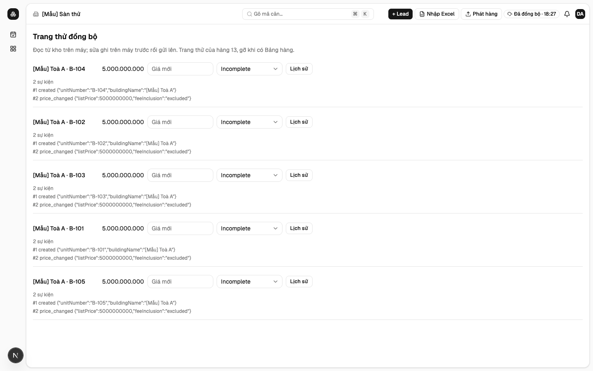


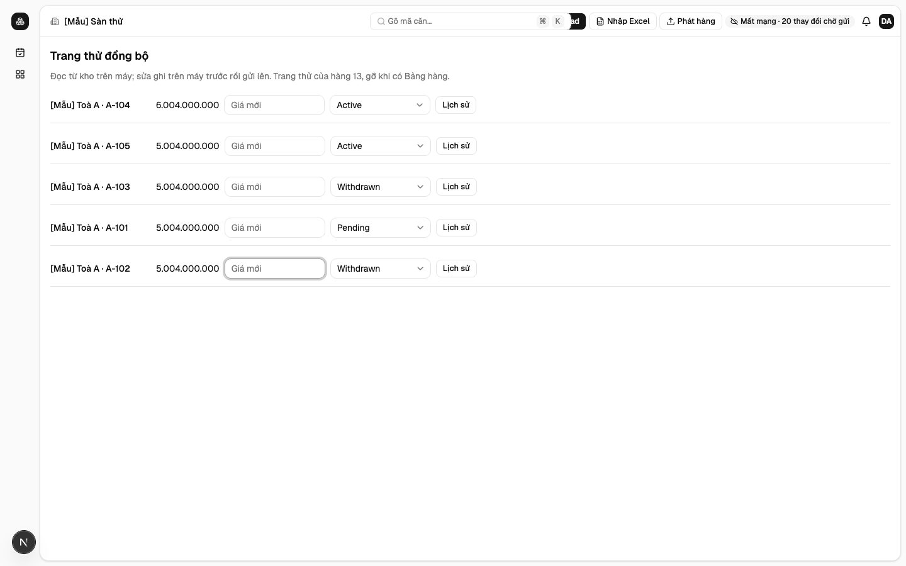
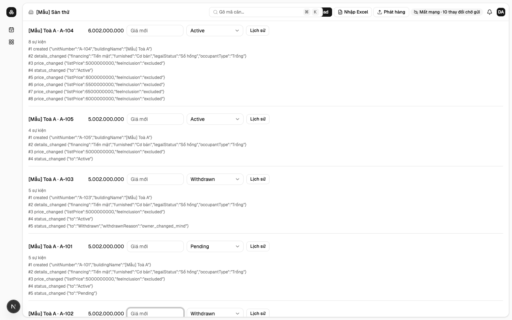
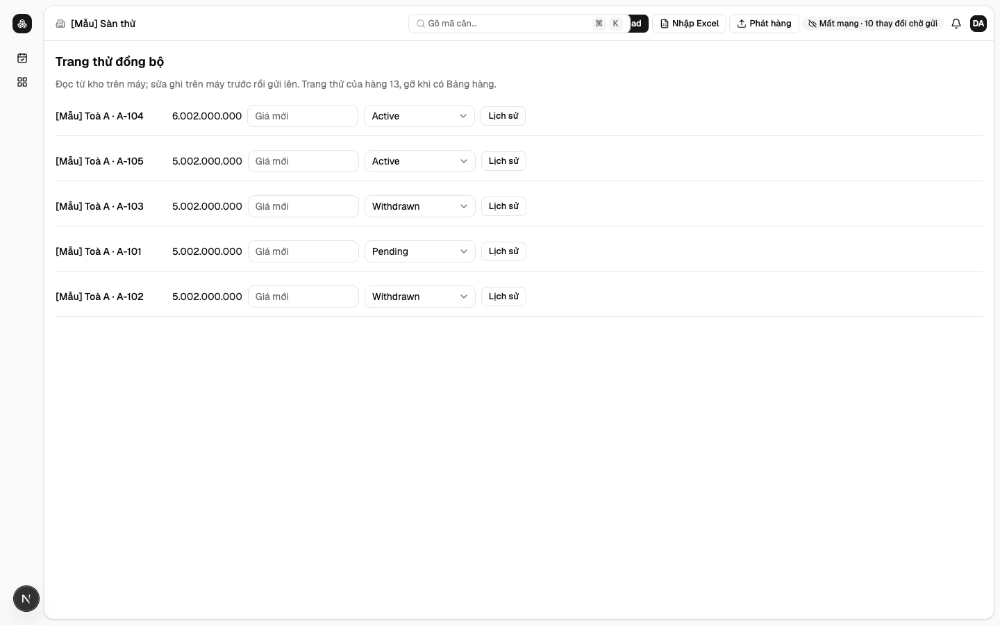
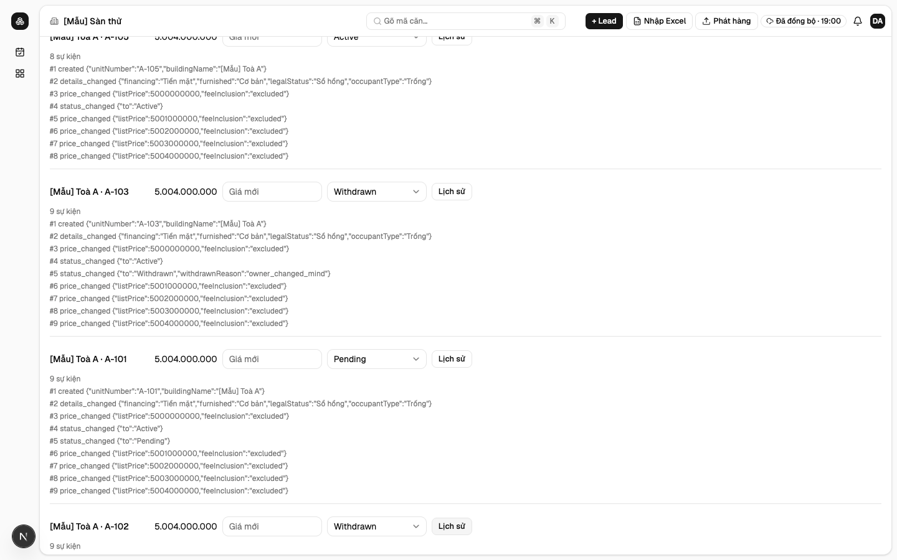
PASS E5 · test
AC-5: Given máy chủ đã ghi một thao tác nhưng phản hồi không về tới máy, When bộ đồng bộ gửi lại, Then máy chủ không có
cmd: npm run test:db -w @quy-hang/web ℹ duration_ms 1432.90925
PASS E6 · test
AC-6: Given X có thao tác chờ trên căn H và trên căn K, Y sửa H trước, When X có mạng, Then thao tác của X trên H không
cmd: npm run test:db -w @quy-hang/web ℹ duration_ms 1432.90925
PASS E7 · test
AC-7: Given Y đặt «Đã cọc» cho căn H trong lúc X mất mạng và có thao tác sửa giá chờ trên H, When X có mạng, Then sửa giá
cmd: npm run test:db -w @quy-hang/web ℹ duration_ms 1432.90925
PASS E8 · test
AC-8: Given các trạng thái của kho và hàng đợi, When suy chỉ báo, Then chữ đúng bảng: chưa có bản kéo → «Đang tải lần
cmd: npm test -w @quy-hang/web ℹ duration_ms 89.612166
PASS E8b · ui-check
AC-8: Given các trạng thái của kho và hàng đợi, When suy chỉ báo, Then chữ đúng bảng: chưa có bản kéo → «Đang tải lần
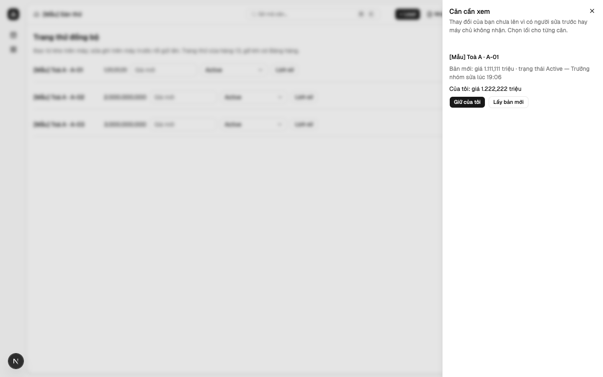
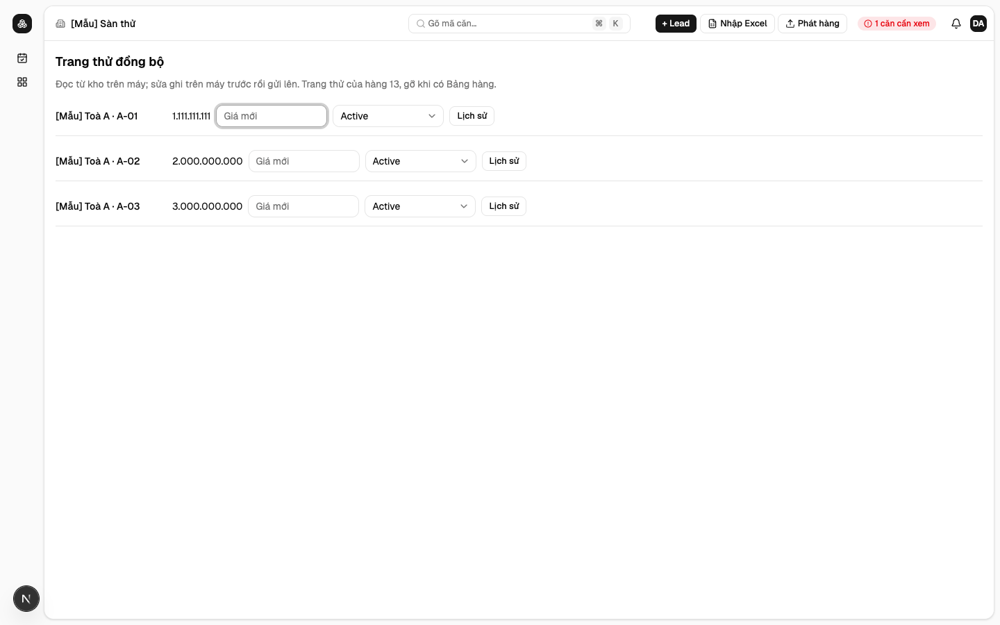
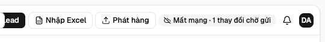


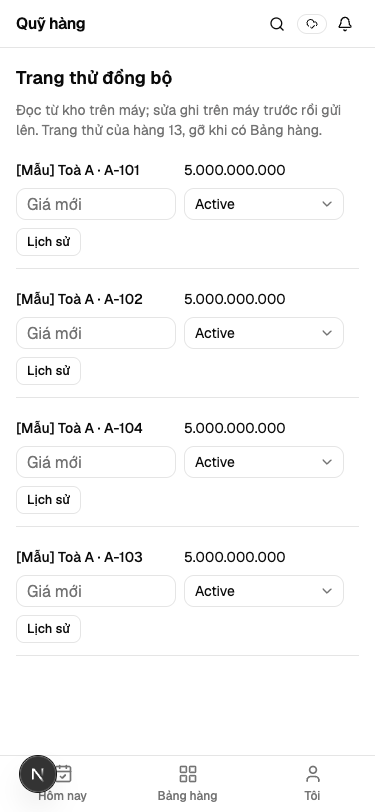
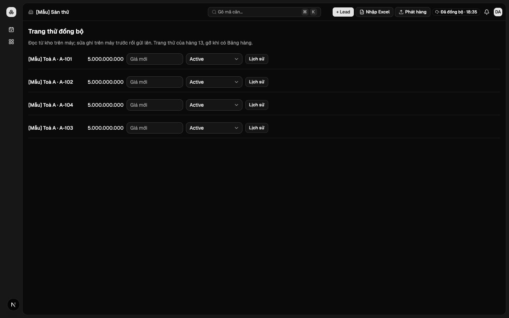
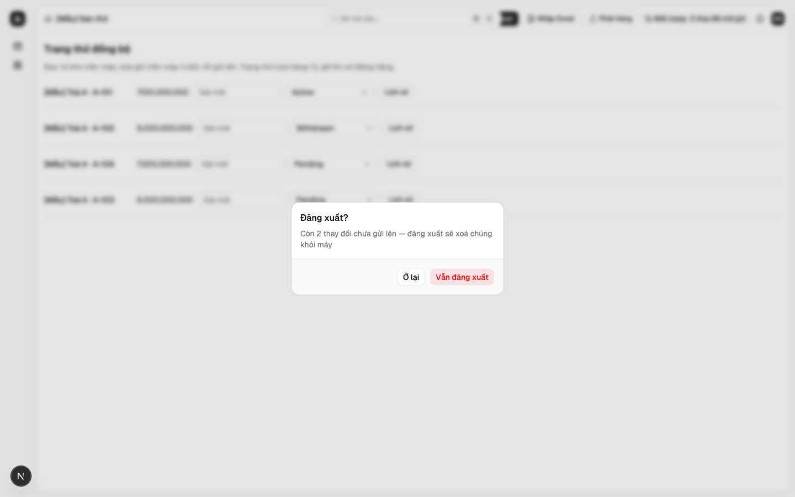
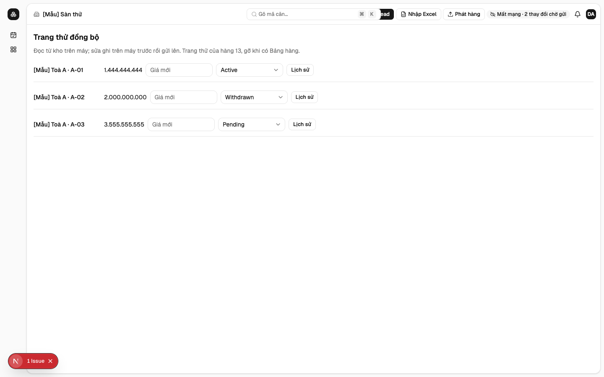


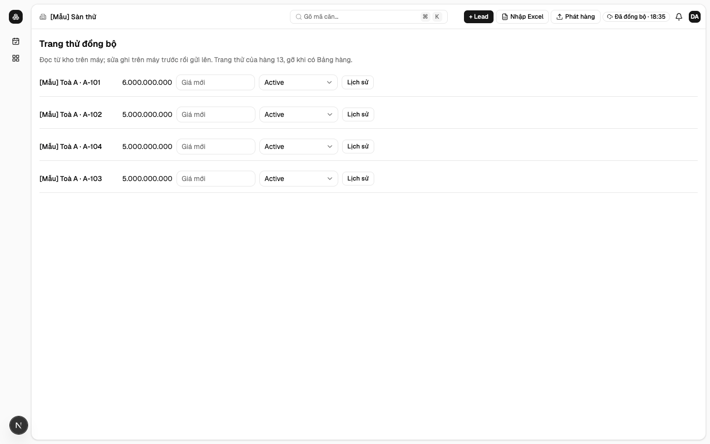

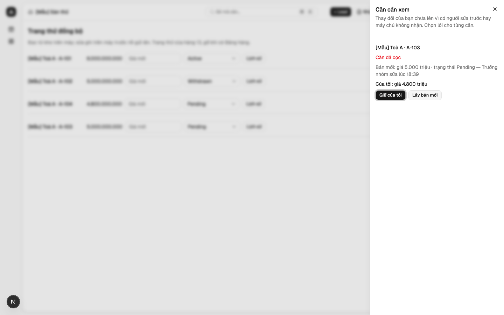
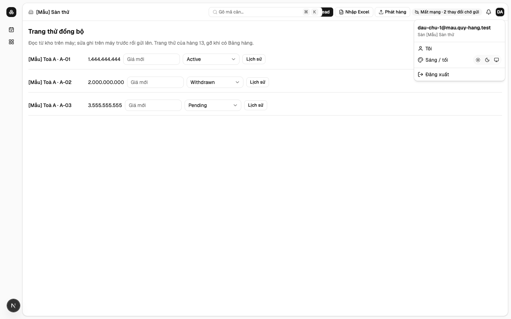
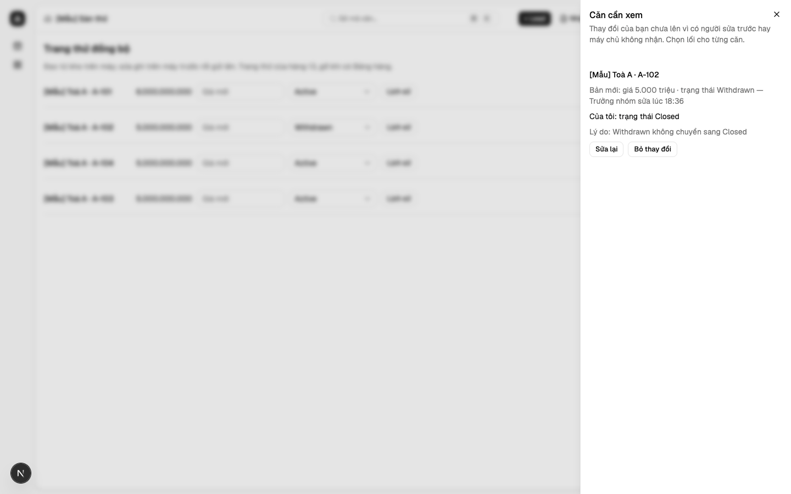
PASS E9 · test
AC-9: Given mất mạng và trình duyệt không phát sự kiện «có mạng», When qua chu kỳ thử 15 giây (có thao tác chờ) hay
cmd: npm test -w @quy-hang/web ℹ duration_ms 89.612166
PASS E10 · test
AC-10: Given người dùng còn n thay đổi chờ gửi, When bấm đăng xuất, Then hiện hỏi nói đúng n; «Ở lại» giữ nguyên kho;
cmd: npm test -w @quy-hang/web ℹ duration_ms 89.612166
Eval không phân biệt (Analyst)
Vòng verify
- Round 1-2: xem run-log.jsonl cua feature.
- Round 3: moi eval (E1-E10, E4b, E8b) va moi lenh suite xanh; khong judgment item, khong eval fail.
Tài nguyên
| Khối | Tác tử | Token đầu ra |
|---|---|---|
| S4 round 1 | 23 | 119.840 |
| S4 round 2 | 19 | 147.149 |
| S4 round 3 | 19 | 117.063 |
3 lượt chấm · tổng 384.052 token
Giới hạn và ngoài hợp đồng
- Màn Bảng hàng và Hồ sơ căn thật — hàng 14, 32, 33 (dùng hook của hàng này).
- Kênh thời gian thực «có thay đổi, kéo về» — Hỏi-2, hàng sau.
- Số chủ và thông tin chủ nhà trên máy — Hỏi-1.
- Ngoại tuyến thật khi mở app lúc không mạng (service worker) — Tham chiếu §11.
- Con trỏ kéo, khoá chống trùng ở máy chủ, mọi thay đổi API hay cơ sở dữ liệu.
- Báo mất máy để xoá từ xa (luật 32) — cần đường máy chủ, hàng sau.
Giao
chưa ghi quan sát production
Giá trị
- Câu hỏi phép đo trả lời: [đề xuất] đã đạt «Mở hồ sơ không chờ mạng; rút mạng năm phút, sửa 20 ô, nối lại thì đủ 20 sự kiện lên máy chủ; thanh trên luôn nói đang ở đâu; hai người cùng sửa thì báo, «Đã bán» và «Đã cọc» thắng» chưa? — chưa đo
- Kết quả nào là SỐNG: [đề xuất] Mở hồ sơ không chờ mạng; rút mạng năm phút, sửa 20 ô, nối lại thì đủ 20 sự kiện lên máy chủ; thanh trên luôn nói đang ở đâu; hai người cùng sửa thì báo, «Đã bán» và «Đã cọc» thắng — chưa đo
- Kết quả nào là CHẾT: [đề xuất] chưa đạt «Mở hồ sơ không chờ mạng; rút mạng năm phút, sửa 20 ô, nối lại thì đủ 20 sự kiện lên máy chủ; thanh trên luôn nói đang ở đâu; hai người cùng sửa thì báo, «Đã bán» và «Đã cọc» thắng» khi hết timebox — chưa đo
- Timebox: … — chưa đo